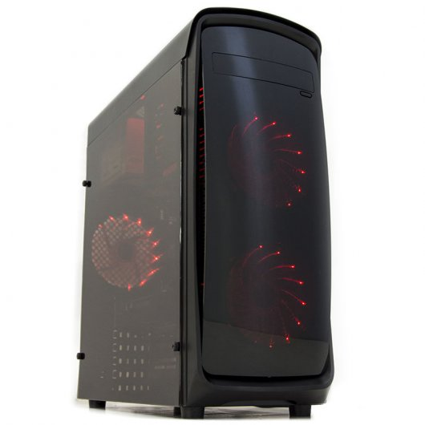
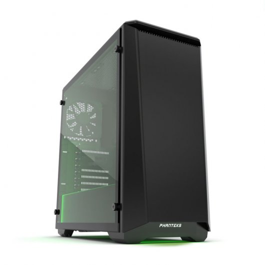
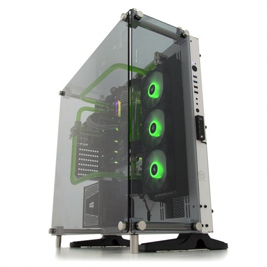

Bronze Ultimate
CARACTERÍSTICAS
Una vez más Estarter sorprende a la industria de la informática con el lanzamiento de los nuevos ordenadores, la nueva línea de Pcs de sobremesa para juegos creada tras un amplio trabajo de investigación para ofrecer el mayor rendimiento y optimización en el juego para nuestros clientes. Ensamblados por nuestros expertos de montaje, los nuevos ordenadores ofrecen un rendimiento increíble, con máxima velocidad, capacidad de ampliación y un amplio abanico de posibilidades dentro de la gama, en la que podrás elegir el producto óptimo según las necesidades y el tipo de Pc que estas buscando.
Gaming Bronze
Entra en el mundo Gaming del PC con este equipo de relación calidad/precio inigualable. Con este equipo disfrutarás de los juegos Online de más exito del momento como LOL, PUBG, Rocket League, CSGO, GTAV...con un rendimiento excelente gracias a su procesador Intel Pentium G4560, sus 8GB de RAM DDR4 y la tarjeta gráfica Nvidia GT 1030 de 2GB.
Especificaciones:
- Torre: L-Link Kazumi USB 3.0 con Ventana
- Fuente de alimentación: Fuente Alimentación 600W
- Placa base: MSI H110M PRO-D
- Procesador: Intel Pentium G4560 3.5GHz
- Disco Duro: 1TB SATA3
- Memoria RAM: G.Skill Aegis DDR4 8GB
- Tarjeta gráfica: GT 1030 2GB GDDR5
- Conexiones delanteras:
- 1x USB 3.0
- 1x USB 2.0
- 1x HD audio
- Conexiones traseras:
- 1 x PS/2 keyboard/ mouse port
- 4 x USB 2.0 ports
- 2 x USB 3.1 Gen1 ports
- 1 x DVI-D port
- 1 x LAN (RJ45) port
- 3 x audio jacks
- Dimensiones 200 x 460 x 420 mm (an x al x pr)
Silver Ultimate
CARACTERÍSTICAS
Salta a la arena preparado para luchar con Battlebox Estarter. La máquina recomendada para los juegos más exigentes, como Overwatch y League of Legends, ofrece 1080p a 60 fotogramas por segundo, realismo de gaming con DirectX 12, tarjetas gráficas GeForce GTX de última generación y hardware de gaming avanzado. Es una nueva forma de dar un salto en tu juego.
Gaming Silver
Entra en la nueva generación de procesadores Intel Kaby Lake con el nuevo PCCOM Silver. Su procesador i5-7500 de última generación y su potente tarjeta gráfica GTX 1060 de 6GB GDDR5 te ofrecerán toda la potencia necesaria para disfrutar de los últimos juegos del mercado con una tasa de frames superior a 60fps y a resolución 1080p.
Especificaciones:
- Torre: Phanteks Eclipse P400 Cristal Templado Negra
- Fuente de alimentación: Nox Urano 650W / ThermalTake 600W
- Procesador: Intel Core i5-7500
- Ventilador CPU: Cooler Master Hyper 212X / Nfortec Vela KX
- Placa base: Asus Prime H270-PRO
- Disco Duro:
- Kingston SSDNow UV400 240GB
- HDD 1TB SATA3
- Memoria RAM: G.Skill Ripjaws V Red DDR4 2400 PC4-19200 16GB 2x8GB CL15
- Tarjeta gráfica: Asus Dual GTX 1060 OC 6GB GDDR5
- Conexiones delanteras:
- 2x USB 3.0
- 1 x Micrófono
- 1 x Altavoces/auricular frontal
- Conexiones traseras:
- 1 x PS/2 keyboard/mouse combo port
- 1 x DP port
- 1 x HDMI port
- 1 x DVI-D port
- 1 x LAN (RJ45) ports
- 2 x 10Gb/s USB 3.1/3.0/2.0 ports (teal blue, Type A)
- 1 x 5Gb/s USB Type C port
- 2 x USB 3.0/2.0 ports ( blue, Type A)
- 2 x USB 2.0/1.1 ports
- 3-Jack 8-Channel Audio I/O ports
- Dimensiones (alto x ancho x prof.)210 x 465 x 470 mm
Gold Ultimate
CARACTERÍSTICAS
Una vez más Estarter sorprende a la industria de la informática con el lanzamiento de los nuevos Pc's, la nueva línea de Pc's de sobremesa con componentes específicos para juegos, creada tras un amplio trabajo de investigación para ofrecer el mayor rendimiento y optimización en el juego para nuestros clientes. Ensamblados por nuestros expertos de montaje, los nuevos Pc's ofrecen un rendimiento increíble, con máxima velocidad, capacidad de ampliación y un amplio abanico de posibilidades dentro de la gama, en la que podrá elegir el producto óptimo según las necesidades y el tipo de Pc que está buscando.
Gaming Gold
Prepárate para el futuro, gracias a la nueva generación de procesadores Intel Coffe Lake y a su potente gráfica Nvidia GTX 1080 Ti estarás listo para el campo de batalla. Una máquina indomable que te brindará una sensación de potencia descomunal a la hora de jugar. Creada y ensamblada con la mayor precisión por nuestros técnicos y los mejores componentes del momento, el PcCom Platinum Ultimate posee unas condiciones inigualables para el juego, superando ampliamente los requisitos técnicos requeridos por los juegos que actualmente van apareciendo en el mercado. Cuenta con 16GB de RAM a 3200Mhz, un rapidísimo SSD M.2 SATA que te sorprenderá con sus 3200 MB de lectura y hasta 1500MB de escritura y una espectacular refrigeración líquida con la que obtendrás la mejor temperatura para el potente procesador i7-8700K de última generación. Todo ello montado en la espectacular torre Phanteks Enthoo EvolV con chasis de aluminio y laterales de Cristal Templado. En definitiva, el equipo perfecto para los que buscan el máximo rendimiento durante mucho tiempo y el mejor acabado con los mejores componentes del mercado
Especificaciones:
- Torre: Phanteks Enthoo EvolV Cristal Templado Gris
- Fuente de alimentación: Corsair RM750i 750W 80 Plus Gold Modular
- Procesador: Intel i7-8700K
- Ventilador CPU: NZXT Kraken X62
- Placa base: Asus Z370-F Gaming
- Disco Duro:
- 2TB SATA3 64MB
- Samsung 960 EVO
- Memoria RAM: G.Skill Trident Z RGB DDR4 3200 PC4-25600 16GB 2x8GB CL16
- Tarjeta gráfica: GTX 1080Ti 11GB GDDR5X
- Conexiones delanteras:
- 2x USB 3.0
- 1 x Micrófono
- 1 x Altavoces/auricular frontal
- Conexiones traseras:
- 1 x PS/2 keyboard/mouse combo port
- 1 x DP port
- 1 x HDMI port
- 1 x DVI-D port
- 1 x LAN (RJ45) ports
- 2 x 10Gb/s USB 3.1/3.0/2.0 ports (teal blue, Type A)
- 1 x 5Gb/s USB Type C port
- 2 x USB 3.0/2.0 ports ( blue, Type A)
- 2 x USB 2.0/1.1 ports
- 3-Jack 8-Channel Audio I/O ports
- Dimensiones (alto x ancho x prof.) 495 x 235 x 510 mm